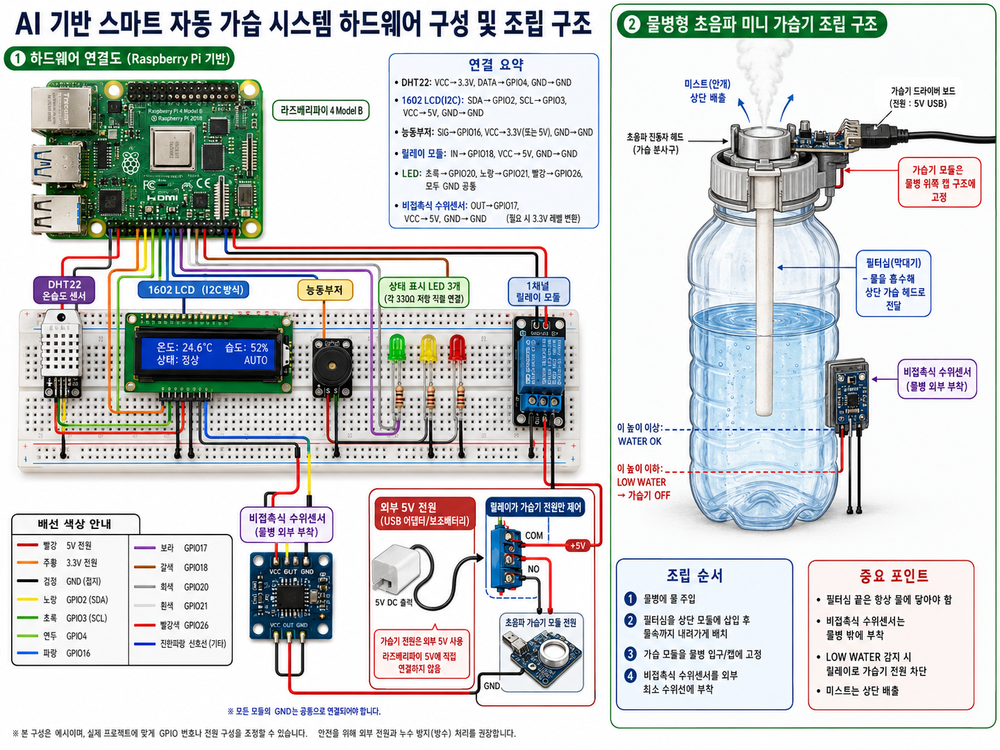

GitHub 폴더명은 프로젝트 주제와 순번이 드러나도록 구성합니다.
Raspberry Pi · AI Prediction · Smart Humidifier
AI 기반 실내 습도 예측 스마트 자동 가습 시스템
실내 온습도와 외부 날씨 데이터를 기반으로 AI가 10분 후 실내 습도를 예측하고, 비접촉식 수위센서와 릴레이 제어를 통해 물병형 초음파 가습기를 자동 제어하는 AIoT 프로젝트 최종 기획서입니다.
01 Final Concept
현재 습도 기준이 아니라 미래 습도 예측 기준으로 제어
일반 자동 가습기는 현재 습도만 보고 켜고 끕니다. 이 프로젝트는 실내 온도, 실내 습도, 외부 온도, 외부 습도, 최근 습도 변화량, 가습기 상태, 물 상태를 함께 사용해 10분 후 실내 습도를 예측합니다.
현재 습도가 아니라 AI가 예측한 10분 후 습도를 기준으로 동작합니다.
물병 외부에 센서를 부착해 위생성과 안정성을 높입니다.
시연 영상에서 상태 변화를 바로 확인할 수 있도록 출력 장치를 구성합니다.
02 System Flow
전체 동작 흐름
센서 입력, 외부 API, AI 예측, 릴레이 제어, 상태 출력이 하나의 흐름으로 연결됩니다.
DHT11 또는 DHT22로 실내 온도와 습도를 측정합니다.
OpenWeatherMap API로 외부 온도와 외부 습도를 가져옵니다.
비접촉식 수위센서로 LOW WATER 상태를 감지합니다.
RandomForestRegressor가 10분 후 습도를 예측합니다.
예측 습도와 물 상태에 따라 가습기 전원을 제어합니다.
LCD, LED, 부저, Flask 대시보드에 상태를 출력합니다.
03 Control Logic
AI 예측값 중심의 제어 로직
현재 습도가 46%로 당장은 괜찮아 보여도, 외부 습도가 낮고 최근 습도가 계속 떨어지고 있다면 AI는 10분 후 건조 상태를 예측할 수 있습니다. 이 경우 시스템은 미리 가습기를 켭니다.
기존 방식
- 현재 습도 낮음 -> 가습기 ON
- 현재 습도 높음 -> 가습기 OFF
- 미래 습도 변화 추세를 반영하기 어려움
본 프로젝트 방식
- AI가 10분 후 실내 습도를 예측
- 예측 습도 45% 미만이면 가습기 ON
- 물 부족 시 예측값과 무관하게 강제 OFF
04 Key Features
핵심 기능
최종 작품에서 보여줄 기능을 시연 가능한 단위로 정리했습니다.
AI 습도 예측
실내외 환경 데이터와 최근 습도 변화량으로 10분 후 실내 습도를 예측합니다.
자동 가습 제어
AI 예측값을 기준으로 릴레이를 제어해 초음파 가습 모듈을 켜고 끕니다.
비접촉식 수위 감지
물병 외부에 수위센서를 부착해 물 부족 상태를 안전하게 감지합니다.
LOW WATER 안전 정지
물이 부족하면 가습기를 강제로 끄고 빨강 LED와 부저로 경고합니다.
LCD1602 출력
현재 습도, 예측 습도, 가습기 상태, 물 부족 상태를 LCD에 표시합니다.
Flask 대시보드
실내외 온습도, AI 예측값, 물 상태, 가습기 상태를 웹에서 확인합니다.
05 AI Model Design
AI 모델 입력값과 출력값
딥러닝보다 설명 가능하고 구현 안정적인 머신러닝 모델을 사용합니다. 최종 추천 모델은 RandomForestRegressor입니다.
| 입력값 | 설명 |
|---|---|
| indoor_temp | 현재 실내 온도 |
| indoor_humidity | 현재 실내 습도 |
| outdoor_temp | 외부 온도 |
| outdoor_humidity | 외부 습도 |
| humidity_change_5min | 최근 5분간 실내 습도 변화량 |
| humidifier_state | 현재 가습기 상태, ON=1/OFF=0 |
| water_state | 물 상태, 물 있음=1/물 부족=0 |
가습기 강제 OFF, 빨강 LED ON, 부저 ON, LCD에 LOW WATER 표시
가습기 ON, 노랑 LED ON, LCD에 HUMIDIFIER ON 표시
가습기 OFF 또는 현재 상태 유지, 초록 LED ON, NORMAL 표시
가습기 OFF, 과습 방지
06 Hardware Structure
하드웨어 구성 및 조립 구조
라즈베리파이 기반 회로 연결과 물병형 초음파 미니 가습기 조립 구조를 이미지로 정리했습니다.

주요 부품
- Raspberry Pi 4B 또는 5
- DHT11 또는 DHT22 온습도 센서
- 비접촉식 수위센서
- 초음파 미니 가습기 모듈
- 1채널 릴레이 모듈
- 1602 LCD, LED 3개, 능동부저
- 외부 5V USB 전원
추가 구매
- 필수: 초음파 미니 가습기 모듈
- 필수: 비접촉식 수위센서
- 선택: DHT22 온습도 센서
- 필요 시: 로직 레벨 컨버터 또는 전압 분배용 저항
07 Output & Dashboard
LCD, LED, 부저, 웹 대시보드 출력 계획
시연 영상에서 프로젝트 완성도를 보여주기 위해 여러 출력 방식을 함께 사용합니다.
H:42% P:38%
Humidifier: ON
LOW WATER!
Humidifier OFF
LED/부저
- 정상: 초록 LED ON, 부저 OFF, 가습기 OFF
- 가습 필요: 노랑 LED ON, 부저 OFF, 가습기 ON
- 물 부족: 빨강 LED ON, 부저 ON, 가습기 OFF
- 과습: 초록 또는 빨강 LED 점멸, 가습기 OFF
Flask Dashboard
- Indoor Temperature / Humidity
- Outdoor Temperature / Humidity
- AI Predicted Humidity
- Water State, Humidifier State, System Status
08 Demo Video Plan
데모 모드를 활용한 3~5분 시연 구성
실제 시스템은 10분 후 습도 예측 구조로 설계하지만, 영상에서는 갱신 주기와 기준값을 데모 모드로 조정해 전체 기능을 짧은 시간 안에 보여줍니다.
DEMO_MODE = True
if DEMO_MODE:
update_interval = 3
dry_threshold = 55
prediction_label = "10min"
else:
update_interval = 60
dry_threshold = 45
prediction_label = "10min"전체 회로, LCD, DHT 센서, 릴레이, 수위센서를 보여줍니다.
초록 LED, LCD NORMAL, 웹 대시보드 정상 상태를 보여줍니다.
AI 예측 습도를 낮게 설정해 릴레이 작동과 미스트 발생을 보여줍니다.
LOW WATER 감지, 가습기 OFF, 빨강 LED, 부저, LCD 경고를 보여줍니다.
09 Development Roadmap
개발 단계
하드웨어 테스트부터 결과 정리까지 최종 구현 흐름을 단계별로 정리했습니다.
- 1하드웨어 개별 테스트
DHT, 수위센서, 릴레이, LCD1602, LED/부저 출력 확인
- 2가습기 모듈 제어
초음파 가습 모듈 단독 전원 테스트와 릴레이 ON/OFF 제어
- 3API 연동
OpenWeatherMap API로 외부 온도와 습도 수집
- 4AI 모델 구현
학습용 CSV 생성, RandomForestRegressor 학습, 모델 저장
- 5통합 제어
센서값, API값, AI 예측값, 수위 상태를 통합해 제어
- 6Flask 대시보드
실내외 온습도, AI 예측 습도, 가습기 상태 표시
- 7결과 정리
GitHub README, 유튜브 영상, 최종 보고서 작성
10 Final Summary
최종 기획 결론
이 프로젝트는 센서 입력, 외부 API, AI 예측, 하드웨어 제어, LCD 출력, 웹 대시보드, 안전 제어가 하나의 목적 안에 자연스럽게 연결되는 AIoT 스마트 가습 시스템입니다.
보고서 강조 포인트
- 현재 습도 기준이 아닌 AI 기반 10분 후 습도 예측 제어
- OpenWeatherMap API를 활용한 외부 날씨 데이터 반영
- 비접촉식 수위센서로 위생성과 안정성 강화
- 물 부족 시 초음파 모듈 공회전 방지
- 데모 모드로 전체 기능을 짧은 시간에 시연
최종 한 줄 설명
실내 온습도와 외부 날씨 데이터를 기반으로 AI가 10분 후 실내 습도를 예측하고, 비접촉식 수위센서로 물 부족 여부를 확인한 뒤, 예측 결과와 수위 상태에 따라 물병형 초음파 가습기를 자동 제어하는 AIoT 스마트 가습 시스템이다.